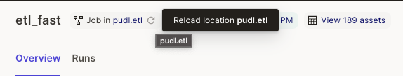
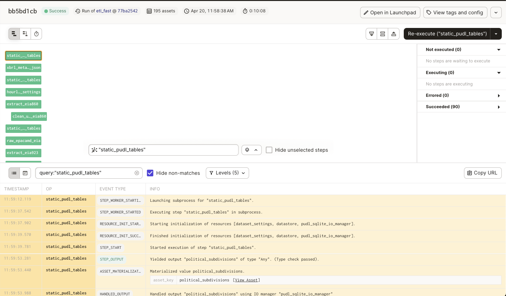
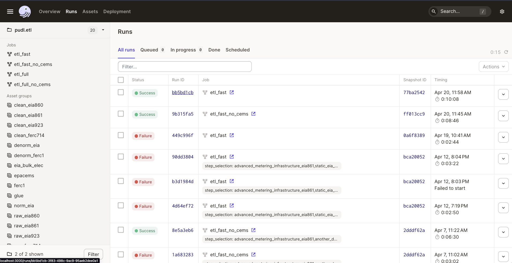
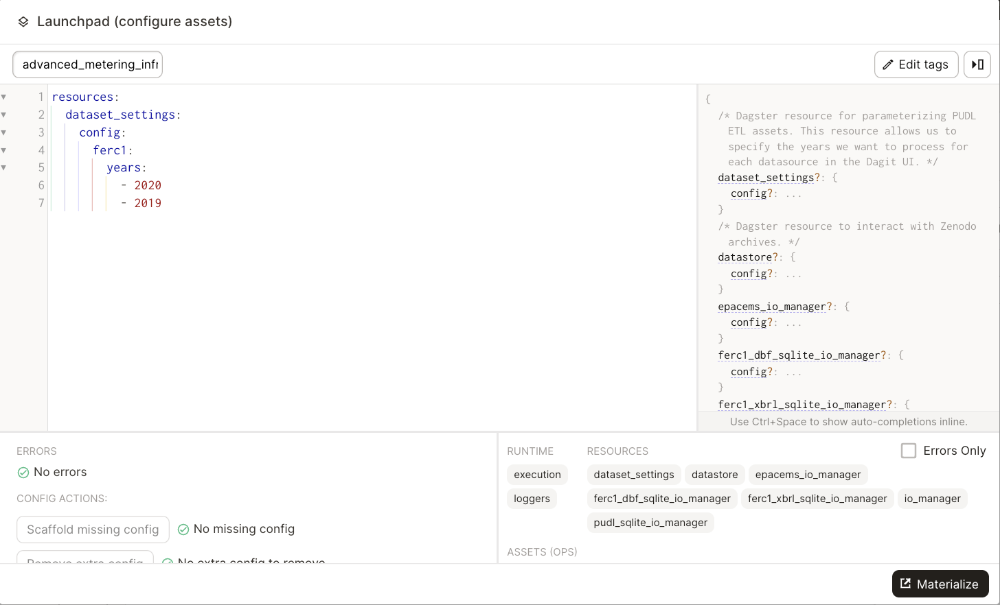

Developing with Dagster#
Reloading code locations#
When a new asset is added in the code it is not automatically added to the DAG in the dagster UI. To refresh the DAG, click the small reload button next to the code location name in the top part of the UI:
{kind=link}

Viewing Logs#
To view logs for a specific asset, click on the asset node in the execution UI for a given Run and Dagster related logs will appear at the bottom of the UI:
{kind=link}

To view logs from previous runs, click on the Run tab in the upper left hand corner, then click the Run ID of the desired run to view the dagster logs.
{kind=link}

You can view PUDL logs in the CLI you used to launch the dagster UI. By default, logs generated using the python logging module are not captured into the Dagster ecosystem. This means that they are not stored in the Dagster event log, will not be associated with any Dagster metadata (such as step key, run id, etc.), and will not show up in the default view of the Dagster UI.
If you need to find the PUDL logs for a previous run, you can search for the run ID in the CLI where you launched the dagster UI. The Dagster docs have more information on how dagster handles logs from Python’s logging module.
Keeping local Dagster instance up-to-date#
You may find that your local Dagster instance doesn’t seem to be picking up new Dagster features properly.
This is likely because a recent Dagster upgrade changed the Dagster internal DB
schema, and you need to run dagster instance migrate to bring that up to
speed before the new features will work.
Assets getting out of sync#
Dagster allows contributors to execute individual assets and debug code changes without having to re-execute upstream code. This is great, but can introduce some headaches when developing on multiple branches.
Let’s say we have a graph with two assets, A and B where B
depends on A. We execute A and B on branch-1. Then we
update and execute asset A to return an integer instead
of a string. Then we switch to branch-2 where we are
working on some improvements to asset B. If we only execute
asset B on branch-2, it will receive A’s value on
branch-1. This is a problem because on branch-2
asset B expects asset A to be a string not an integer.
To avoid a scenario like this, it is recommended you
re-materialize all assets in the ``pudl.etl`` definition
when you switch branches.
Configuring resources#
Dagster resources are python objects that any assets can access. Resources can be configured using the dagster UI to change the behavior of a given resource. PUDL currently has three resources:
pudl.resources.dataset_settings()#
The dataset_settings resource tells the PUDL ETL which years
of data to process. You can configure the dataset settings
by holding shift while clicking the “Materialize All” button in the upper
right hand corner of the Dagster UI. This will bring up a window
where you change how the resource is configured:
{kind=link}

Note
If a dataset is not specified in the config, the dataset will be processed using the default configuration values.
The panel on the right hand side of the window displays the available config options and the expected types of inputs. You can also hover over the config options to view the default values. Once you’ve configured the resource you can select “Materialize All” to execute the selected assets.
Note
The configuration edits you make in the dagster UI are only used
for a single run. If want to save a resource configuration,
change the default value of the resource or create a new job
in pudl.etl or pudl.ferc_to_sqlite with the
preconfigured resource.
pudl.resources.datastore()#
The datastore resource allows assets to to pull data from PUDL’s raw data archives on Zenodo.
pudl.resources.ferc_to_sqlite_settings()#
The ferc_to_sqlite_settings resource tells the ferc_to_sqlite
job which years of FERC data to extract.